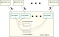
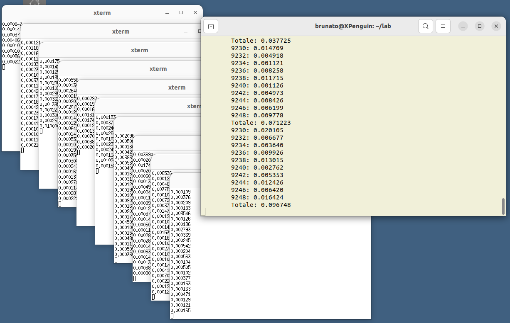

L'obiettivo dell'esercitazione è la realizzazione di un sistema in cui vari processi “giocatori” acquisiscono punteggi in un gioco casuale e li comunicano a un processo principale che mantiene i totali e li visualizza a intervalli regolari.
Scrivere una funzione giocatore() che esegue in un loop infinito, senza istruzioni di ritardo, le seguenti operazioni:
Scrivere una funzione main() per testare la funzione appena creata. L'output dovrebbe essere simile al seguente, con le righe stampate a intervalli irregolari (la prima sullo standard error, la seconda sullo standard output):
10108: 0.000109
0.000109
10108: 0.000197
0.000197
10108: 0.000115
0.000115
10108: 0.000114
0.000114
...
È preferibile strutturare il codice come una libreria contenente la sola funzione giocatore() (con file sorgente giocatore.c e file header giocatore.h) e il programma principale passo1.c contenente la sola funzione main(), da compilare nell'eseguibile passo1.
È altresì preferibile che la compilazione sia guidata da un Makefile.
Realizzare un programma che, utilizzando la libreria giocatore.c creata nel passo precedente, lanci 10 processi figlio ciascuno dei quali esegue la funzione giocatore() comunicando al genitore i punteggi conseguiti. Nello specifico, per dieci iterazioni:
Ogni thread di ascolto riceverà i punteggi generati dal corrispondente processo figlio attraverso la pipe ad esso dedicata. Il processo genitore manterrà un array float punteggi_parziali[10] in cui accumulare separatamente i punteggi di ogni processo figlio, e una variabile float punteggio_totale in cui accumulare tutti i punteggi:

Ogni cinque secondi, il processo genitore deve stampare il punteggio conseguito da ciascun figlio, seguito dal punteggio totale.
Il file sorgente principale deve chiamarsi passo2.c e deve essere compilato nell'eseguibile passo2.
Anche in questo caso è preferibile che il programma sia strutturato in modo corretto, con variabili locali (quando possibile) e un Makefile.
L'output del programma potrà essere simile al seguente. Le rige indentate sono il resoconto periodico del processo genitore, le altre sono quelle stampate dai singoli giocatori sullo standard error:
9836: 0.000000
9838: 0.000000
9840: 0.000000
9842: 0.000000
9844: 0.000000
9846: 0.000000
9848: 0.000000
9850: 0.000000
9852: 0.000000
9854: 0.000000
Totale: 0.000000
9850: 0.000222
9854: 0.000203
9850: 0.000487
9848: 0.000119
.
.
.
9844: 0.000214
9838: 0.002058
9844: 0.000121
9848: 0.000139
9836: 0.000604
9838: 0.004138
9840: 0.002912
9842: 0.000000
9844: 0.002174
9846: 0.001682
9848: 0.002140
9850: 0.001619
9852: 0.000249
9854: 0.002789
Totale: 0.018307
9848: 0.000454
9840: 0.000518
9854: 0.000272
.
.
.
Creare il sorgente passo3.c come modifica del passo precedente in cui i processi giocatore consistono nell'invocazione dell'eseguibile passo1 invece che nella chiamata diretta della funzione.
Il comportamento del programma non dovrebbe differire dal precedente.
Creare il sorgente passo4.c che opera come nel passo precedente, ma in cui ogni processo figlio viene lanciato nella propria finestra di terminale; il risultato dovrebbe essere simile al seguente:

> Mostra alcune annotazioni sul passo 4.
Le seguenti informazioni servono solo a facilitare la stesura del codice, ma non è obbligatorio seguirle.
#include <stdio.h>
#include <stdlib.h>
#include <fcntl.h>
#include <unistd.h>
#include <pthread.h>